地圖：這個單元要記什麼
| 概念 |
一句話核心 |
重要度 |
| 1 光合作用 |
葉綠體裡，光反應（類囊體膜）＋固碳反應（基質），把光能變成醣類的化學能 |
★★★★★ |
| 2 呼吸作用 |
糖解（細胞質）→ 乙醯輔酶 A → 檸檬酸循環 → 電子傳遞鏈（粒線體），或無氧發酵 |
★★★ |
| 3 細胞代謝與能量 |
ATP 做的事、合成與分解的轉換中心、ATP／ADP 比值 |
★★★ |
這一單元的主線是一句話：光合作用把光能存進醣類，呼吸作用再把醣類的能量搬到 ATP 上，ATP 才是細胞直接使用的能量貨幣。
太陽輻射能與葉綠素
- 就生命而言，波長 380～760 nm 的可見光最重要。
- 葉綠素分子吸收光能後，電子由低能階（基態）躍到高能階（激發態），並被釋放出來，由其他生物分子接受（還原態葉綠素 → 激發態 → 氧化態）。
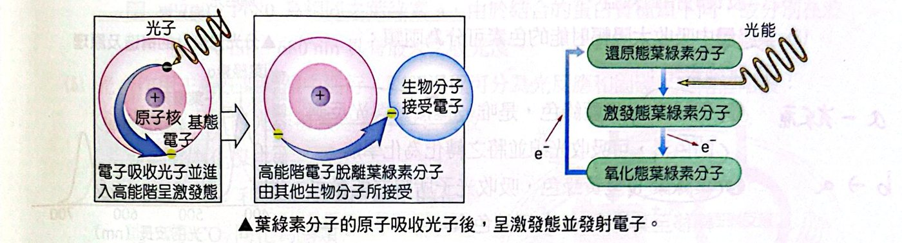
葉綠素分子吸收光子後，呈激發態並發射電子
葉綠體的構造
- 葉綠體由兩層膜構成，典型葉肉細胞中約含 30～40 個葉綠體。
- 內部膜系統：類囊體膜 → 構成類囊體 → 疊成葉綠餅。
| 構造 |
重點 |
| 類囊體膜 |
含光合色素，是光反應進行的場所 |
| 類囊體（的囊腔） |
囊腔中積聚氫離子，以進行光磷酸化作用 |
| 葉綠餅 |
由類囊體堆疊而成 |
| 基質 |
葉綠餅與內膜間的液態物質，是固碳反應進行的場所 |
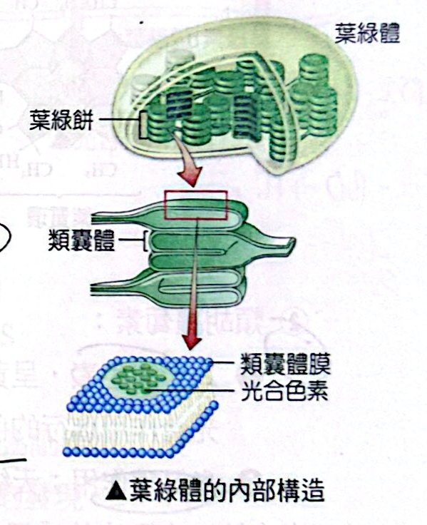
葉綠體的內部構造
作用光譜與吸收光譜
- 作用光譜：英格曼（Engelmann）的實驗——光經三稜鏡，照射載玻片上的絲狀藻；好氧菌聚集在紫、藍、紅光的部位（那裡產生的氧最多，光合作用最強）。目的：測量不同波長的光對光合作用的效益。
- 吸收光譜：用分光光度計測量不同波長的光被光合色素溶液吸收或穿透的比率，把色素的光吸收對波長作圖。
- 作用光譜比吸收光譜更能精確測出不同波長的相對效益；英格曼實驗中的細菌分布與作用光譜極為吻合。
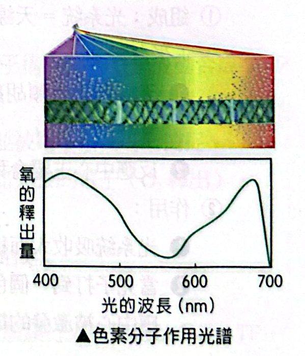
色素分子作用光譜
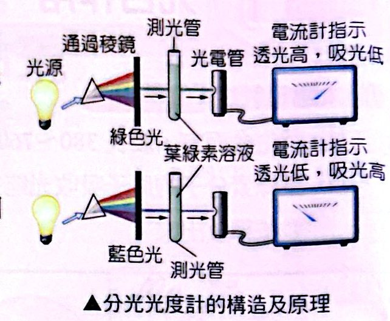
分光光度計的構造及原理
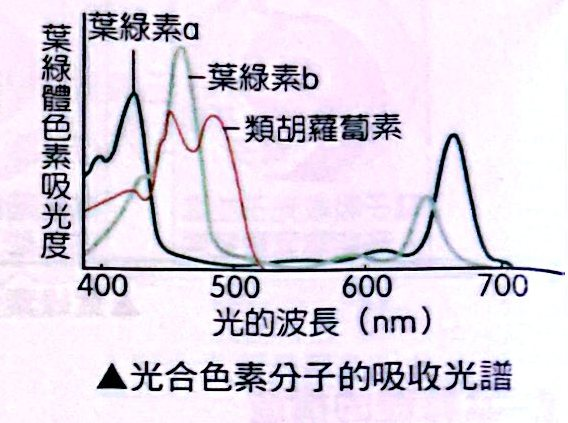
光合色素分子的吸收光譜
光合色素：兩大類
| 類別 |
成員 |
重點 |
| 葉綠素類 |
葉綠素 a：藍綠色 |
唯一直接參與光反應的色素，可吸收光線並轉化為化學能（反應中心） |
|
葉綠素 b：黃綠色 |
吸收光子所得的能量轉移至葉綠素 a，為天線色素 |
| 類胡蘿蔔素類 |
葉黃素、β 胡蘿蔔素（黃色或橙色） |
天線色素：吸收葉綠素不能吸收的光波長，使光譜變寬；光保護作用：吸收和離散過量光能，避免過強的光破壞葉綠素 |
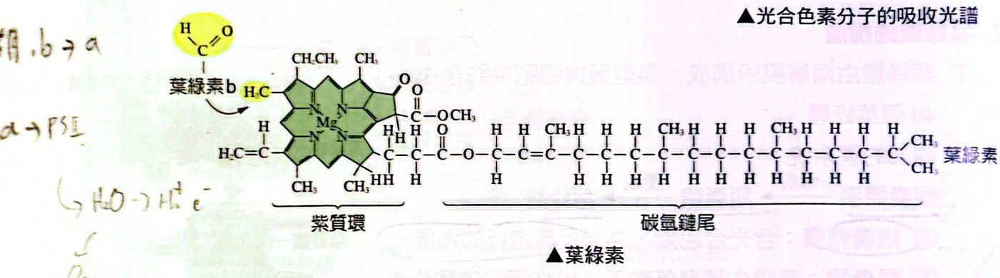
葉綠素 a、b 的結構：紫質環＋碳氫鏈尾
光系統
光系統：由聚光的「天線複合物」構成，含多量（數百個）與數種的色素分子。
- 組成：光系統 ＝ 天線色素 ＋ 反應中心（葉綠素 a）＋ 蛋白質
- 天線色素：類胡蘿蔔素、葉綠素 b 及大多數的葉綠素 a；
- 反應中心：主要含葉綠素 a 分子及蛋白質。
- 作用：吸收大面積、大範圍光譜的日光；光子打到一個色素分子，能量經由色素分子一個個傳到反應中心，反應中心被激發的電子由電子接受者捕捉。
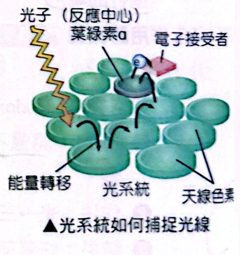
光系統如何捕捉光線
|
光系統 I（PS I） |
光系統 II（PS II） |
| 反應中心 |
P700 |
P680 |
| 天線色素 |
葉綠素 a、葉綠素 b、胡蘿蔔素 |
葉綠素 a、葉綠素 b、葉黃素 |
| 水的分解 |
不引起 |
可引起 |
| 參與的電子傳遞 |
非循環式及循環式電子傳遞 |
非循環式電子傳遞 |
註：P700、P680 為相同的葉綠素 a，由於結合的蛋白質種類不同，故分別在波長 700 nm、680 nm 具有最大吸光度。類囊體膜具有兩型光系統，依被發現的先後順序命名。
光合作用的概觀
光合作用主要在葉綠體中進行，分成兩個階段：
| 階段 |
場所 |
做什麼 |
| 光反應 |
類囊體膜 |
太陽光能被葉綠素等色素吸收，轉變為化學能（產生 ATP 與 NADPH），並分解水放出 O₂ |
| 固碳反應 |
基質 |
利用光反應產生的化學能，把 CO₂ 同化成醣類 |
總反應式：CO₂ ＋ 2H₂O → CH₂O ＋ H₂O ＋ O₂（光、葉綠體）
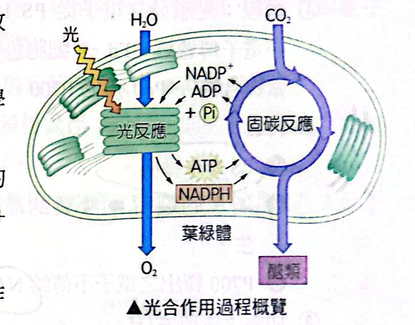
光合作用過程概覽：光反應與固碳反應
光合作用釋放的 O₂ 來自水的裂解（研究的關鍵性突破）：
- 范尼爾（C. B. van Niel），1929 年：硫化細菌 CO₂ ＋ 2H₂S → CH₂O ＋ H₂O ＋ 2S（放出的是 S，不是 O₂）；植物 CO₂ ＋ 2H₂O → CH₂O ＋ H₂O ＋ O₂。他提出假說：植物裂解水當作氫源，並釋出 O₂ 為副產物。
- 用放射性同位素 ¹⁸O 追蹤，證實范尼爾的發現：
- 實驗㈠：CO₂ ＋ 2H₂¹⁸O → CH₂O ＋ H₂O ＋ ¹⁸O₂（O₂ 帶標記）
- 實驗㈡：C¹⁸O₂ ＋ 2H₂O → CH₂¹⁸O ＋ H₂¹⁸O ＋ O₂（O₂ 沒標記）
- 結論：O₂ 來自水，不是來自 CO₂。
光反應
① 非循環式電子傳遞：透過光系統及類囊體膜上的分子構造間的電子流動，合成 ATP 及 NADPH。
- PS II 吸收光能，P680 的電子被激發成高能階，並被電子接受者捕捉；
- 水分子裂解釋出電子，以代替 P680 因吸收光能而失去的電子（O₂ 釋出）；
- PS II 的電子接受者 →「電子傳遞鏈」→ PS I；
- PS I 之 P700 的電子為光所激發，並由電子接受者所接收；
- 電子最後傳遞給 NADP⁺ 而形成 NADPH；
- 電子傳遞鏈傳遞過程中，所釋出的能量藉由類囊體膜行光磷酸化以合成 ATP。
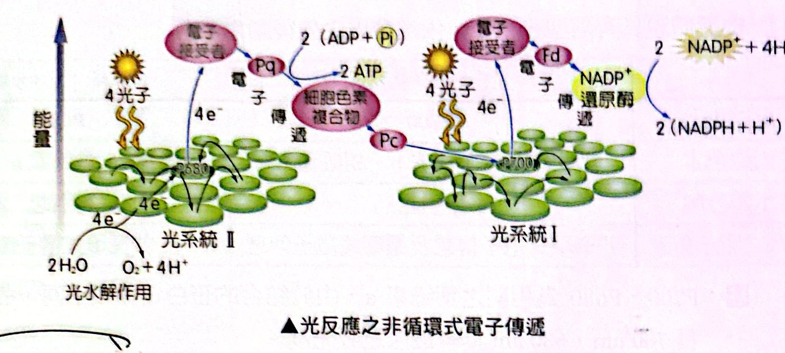
光反應之非循環式電子傳遞（PS II → 電子傳遞鏈 → PS I → NADPH）
② 循環式電子傳遞：光激發之電子從 PS I 經電子傳遞鏈（Fd → 細胞色素複合物 → Pc）流回 P700。
- 特色：PS II 未參與；無水的裂解 ⇒ 無氧的產生；P700 釋出之電子不傳給 NADP⁺ ⇒ 無 NADPH 的生成；
- 功能：只生成 ATP。
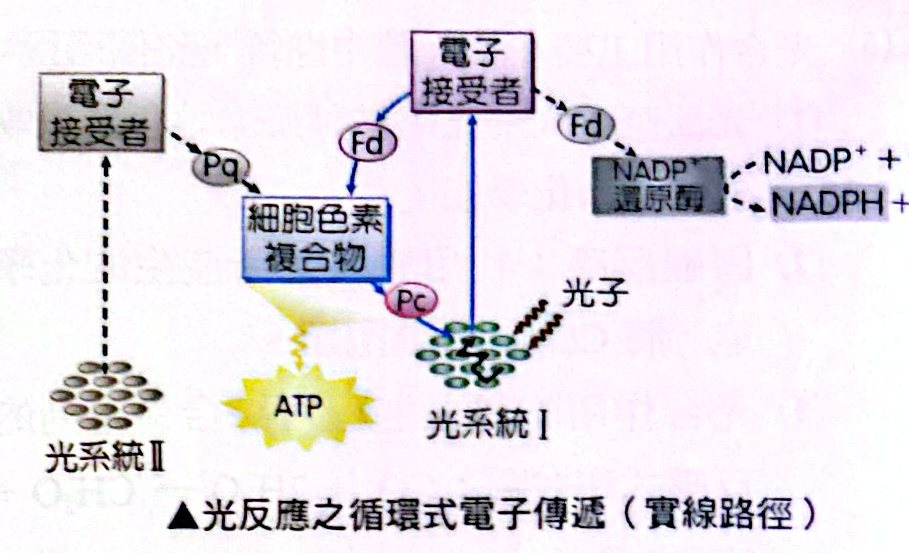
光反應之循環式電子傳遞（實線路徑）
|
非循環式 |
循環式 |
| 光系統 |
PS II ＋ PS I |
只有 PS I |
| 水裂解、O₂ |
有 |
無 |
| NADPH |
有 |
無 |
| ATP |
有 |
有（主要目的） |
| 電子最後去處 |
NADP⁺ |
流回 P700 |
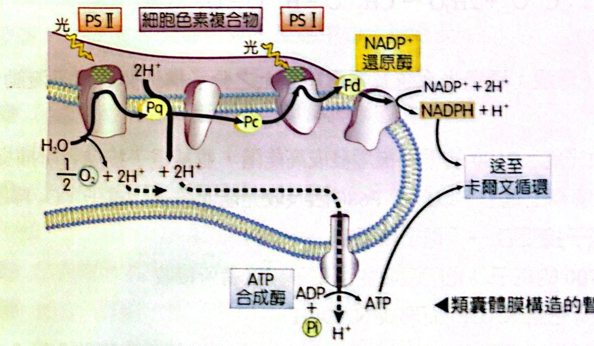
類囊體膜構造的暫時模型（化學滲透）
固碳反應（卡爾文循環）
1961 年，美國植物生理學家卡爾文（Melvin Calvin）利用 ¹⁴C 追蹤劑，探討綠球藻行光合作用時固定 CO₂ 的途徑，以「卡爾文循環（卡氏循環）」獲得諾貝爾獎。
過程（三個步驟）：
- 固碳作用：核酮糖羧化酶（Rubisco）催化 CO₂ 與 RuBP（雙磷酸核酮糖，五碳）作用，生成 2 分子的 3-磷酸甘油酸（3-PG）（三碳）。
- 還原作用：每分子的 3-PG 利用光反應所產生的 ATP 及 NADPH 還原成磷酸甘油醛（G3P）。
- G3P 是一種三碳醣，和糖解作用過程中葡萄糖分裂而成的三碳醣相同；
- 部分 G3P 逸出循環，合成磷酸果糖、磷酸葡萄糖等單醣，再進一步合成蔗糖或澱粉：2G3P（3C）→ 磷酸果糖（6C）→ 磷酸葡萄糖（6C）→ 蔗糖或澱粉；
- G3P 在葉綠體中可合成澱粉儲存；若送至細胞質則合成蔗糖，再以蔗糖形式送至其他部位儲存。
- RuBP 的再生：5 分子 G3P 的碳骨架消耗掉 3 分子 ATP，重新排列成 3 分子 RuBP。
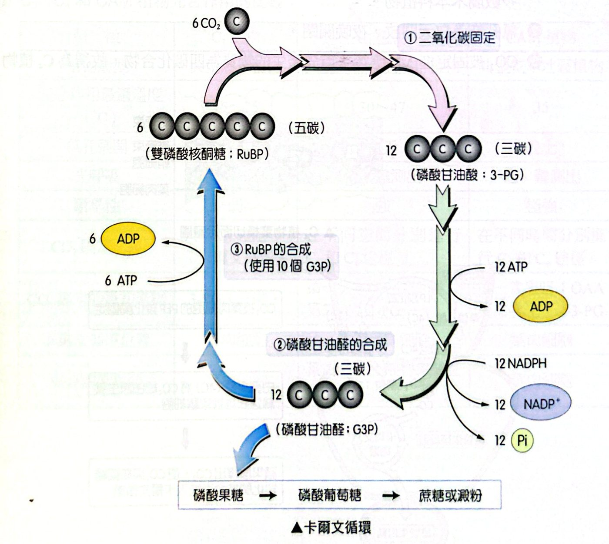
卡爾文循環
記數字：6 CO₂ ＋ 6 RuBP（五碳）→ 12 個 3-PG（三碳）；12 ATP＋12 NADPH → 12 G3P；其中 10 個 G3P ＋ 6 ATP → 6 RuBP；剩下 2 個 G3P 合成醣類。每固定 1 分子 CO₂ 消耗 3 ATP、2 NADPH。
不同氣候下的固碳作用：C₃、C₄、CAM
| 特徵 |
C₃ 植物 |
C₄ 植物 |
CAM 植物 |
| 植物類型 |
典型溫帶植物（水稻、小麥） |
典型熱帶或亞熱帶（甘蔗、玉米、多數禾本科） |
典型乾旱地區（鳳梨、仙人掌、石蓮） |
| 光合作用最適溫度 |
15～25 °C |
30～47 °C |
35 °C |
| 氣孔開放 |
白天開、夜間關 |
白天開、夜間關 |
晚上開、白天關 |
| 光呼吸 |
高，易測出 |
低，難測出 |
低，難測出 |
| 耐旱性 |
弱 |
強 |
極強 |
| CO₂ 固定途徑 |
只有 C₃（卡爾文循環） |
在不同空間分別進行 C₃ 與 C₄ 途徑 |
在不同時間分別進行 C₄ 與 C₃ 途徑 |
| CO₂ 固定的最初產物 |
3-PG（三碳） |
第一次：OAA（草醯乙酸，四碳）；第二次：3-PG |
第一次（黑暗）：OAA（四碳）；第二次（光下）：3-PG |
| 卡爾文循環位置 |
葉肉細胞 |
維管束鞘細胞 |
葉肉細胞 |
| 光合細胞種類 |
葉肉細胞 |
葉肉細胞＋維管束鞘細胞 |
葉肉細胞 |
C₄ 路徑（空間隔離）：葉肉細胞中，CO₂ 被 PEP 羧化酶固定成草醯乙酸（4C）→ 蘋果酸（4C）→ 經原生質絲送到維管束鞘細胞 → 蘋果酸釋出 CO₂，使 CO₂ 與核酮糖羧化酶結合而進入卡爾文循環；剩下的丙酮酸（3C）回到葉肉細胞，耗 ATP 再生成 PEP。
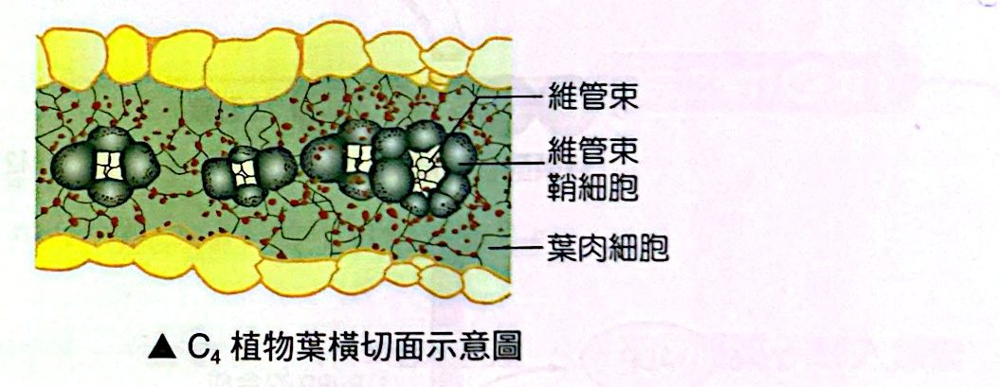
C₄ 植物葉橫切面：維管束、維管束鞘細胞、葉肉細胞
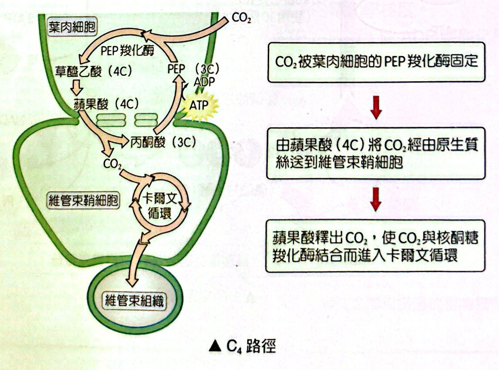
C₄ 路徑
CAM 路徑（時間隔離）：晚上氣孔開，CO₂ 被 PEP 羧化酶固定成四碳酸（蘋果酸），儲存於液泡；白天氣孔關，蘋果酸釋出 CO₂ 進入卡爾文循環。
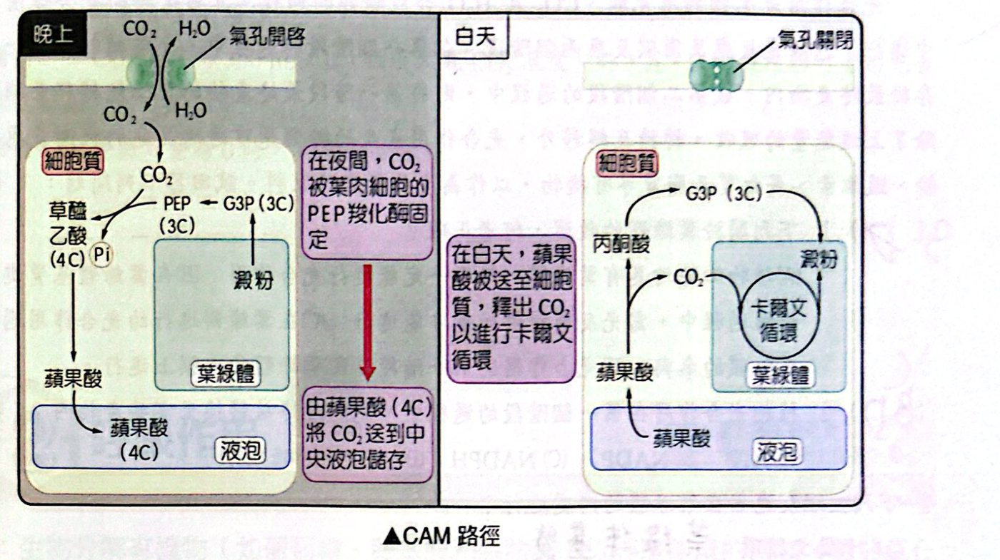
CAM 路徑
經典演練
光合作用是生物利用光能、CO₂ 及 H₂O 合成醣類的過程。真核生物的光合作用在葉綠體中進行，包括光反應及固碳反應兩個階段。在第一個階段的過程中，光能被轉換成化學能，儲存於最終產物內。在第二個階段的過程中，則將第一階段最終產物的化學能轉移至醣類分子。除了上述能量的吸收、轉換及轉移外，光合作用產生的醣類還可透過其他的代謝反應，合成澱粉、纖維素、蛋白質及脂質等有機物，以作為生長所需的原料。
下列關於葉綠體的敘述，何者正確？
(A) 植物細胞均具有葉綠體，但不一定能進行光合作用 (B) 在葉綠體基質進行的光合作用過程中，需光反應提供能量才能進行 (C) 在葉綠餅進行的光合作用過程需要二氧化碳的參與 (D) 光合作用的第一階段是在葉綠體的內膜上進行
看答案與詳解收起
答(B)
解
- (A) ✗ 植物的根、表皮細胞等不含葉綠體。
- (B) ○ 基質進行固碳反應，需要光反應提供的 ATP 與 NADPH。
- (C) ✗ 葉綠餅（類囊體）進行光反應，CO₂ 的固定在基質。
- (D) ✗ 光反應在類囊體膜上進行，不是葉綠體的內膜。
植物光合作用在第一個階段的過程中，光能最終被轉換至哪些產物內？（多選）
(A) ATP (B) NADP⁺ (C) NADPH (D) ADP (E) 醣類分子
看答案與詳解收起
答(A)(C)
解光反應把光能轉成化學能，儲存在 ATP 與 NADPH 裡；NADP⁺、ADP 是它們的「空」形式（反應物）；醣類是第二階段（固碳反應）的產物。
下列生理反應各在葉綠體的何處進行？(1) 卡爾文循環 (2) 光反應的電子傳遞鏈 (3) 固定 CO₂
看答案與詳解收起
答(1) 葉綠體基質 (2) 類囊體膜 (3) 葉綠體基質
解
- 卡爾文循環與固定 CO₂（Rubisco 催化）都在基質；
- 電子傳遞鏈在類囊體膜。
看答案與詳解收起
答澱粉
解G3P 在葉綠體內合成澱粉儲存；若送到細胞質則合成蔗糖運往他處。
在環境溫度、光照等其他條件適宜的情況下，隨 CO₂ 濃度的增高，光合作用逐漸增強，當光合作用與細胞呼吸強度相同時，此時的 CO₂ 濃度稱為 CO₂ 補償點。當 CO₂ 濃度增高到一定水平時，光合作用不再繼續增強，此時的 CO₂ 濃度稱為 CO₂ 飽和點。下圖表示 A、B 兩種植物在環境溫度、光照等其他條件適宜的情況下，光合作用強度對環境中 CO₂ 濃度變化的關係圖：
若將 A、B 兩種植物幼苗置於同一密閉的玻璃罩中，在 CO₂ 濃度為 550 μL/L 及光照等其他條件適宜的情況下，下列敘述何者正確？
(A) 實驗初始，A 植物的光合作用強度大於 B 植物 (B) 一段時間後，隨著玻璃罩中 CO₂ 濃度降低，B 植物生長首先受影響 (C) 一段時間後，B 植物的 CO₂ 淨固定量大於 A 植物 (D) 當玻璃罩中 CO₂ 濃度低至 30 μL/L 時，B 植物將無光合作用的進行
看答案與詳解收起
答(B)
解由圖：A 在低 CO₂ 時就快速上升並早早飽和（CO₂ 補償點低），B 要在高 CO₂ 才達飽和。
- (A) ✗ 550 μL/L 時 B 的曲線在 A 的上方（B 淨固定量略高），所以初始 A 不比 B 強。
- (B) ○ CO₂ 逐漸降低時，B 的曲線掉得快，B 的補償點較高，先低於補償點而生長受影響。
- (C) ✗ 隨濃度下降到 A、B 曲線交會以下時，A 的淨固定量較大。
- (D) ✗ 30 μL/L 時 B 的淨固定量為負，是「光合作用小於呼吸作用」，並不是沒有光合作用。
依據上題的圖及所學知識判斷，下列敘述哪些正確？（多選）
(A) 植物 B 屬於 C₃ 植物 (B) 在水分有限且高溫的環境中，植物 A 競爭力較強 (C) 若大氣中的 CO₂ 濃度倍增，則植物 A 的競爭力可能較強 (D) 若大氣中的 CO₂ 濃度倍增，則植物 A 的光呼吸作用可能會下降 (E) A、B 兩植物最終將 CO₂ 合成有機物時，都要通過 C₃ 路徑
看答案與詳解收起
答(A)(B)(E)
解
- A 在低 CO₂ 下就能高效固碳（補償點低、飽和快）＝C₄ 植物；B 需要較高 CO₂ ＝C₃ 植物。
- (A) ○。 (B) ○ C₄ 植物耐高溫、耐旱。
- (C) ✗ CO₂ 倍增對 C₃（B）較有利，A 本來就已飽和，優勢反而縮小。
- (D) ✗ A（C₄）光呼吸本來就低，不會「再下降」的合理推論；而且 CO₂ 濃度增加下降的是 C₃（B）的光呼吸。
- (E) ○ C₃、C₄ 最終都進入卡爾文循環（C₃ 路徑）。
根據圖判斷在 CO₂ 濃度為 300 μL/L（接近大氣 CO₂ 濃度）時，A、B 兩種植物何者的光合作用強度較高？
看答案與詳解收起
答A
解在 300 μL/L 時 A 的 CO₂ 淨固定量已接近飽和值（約 53），B 還在上升階段（明顯低於 A），所以 A 較高。
當植物的 CO₂ 淨固定量為 0 時，其意義為何？
看答案與詳解收起
答光合作用固定 CO₂ 的速率等於呼吸作用釋放 CO₂ 的速率（光合作用＝呼吸作用強度），此時的 CO₂ 濃度即為 CO₂ 補償點。
解淨固定量＝光合作用固定量 − 呼吸作用釋放量；為 0 就是兩者相等，植物沒有淨累積有機物。